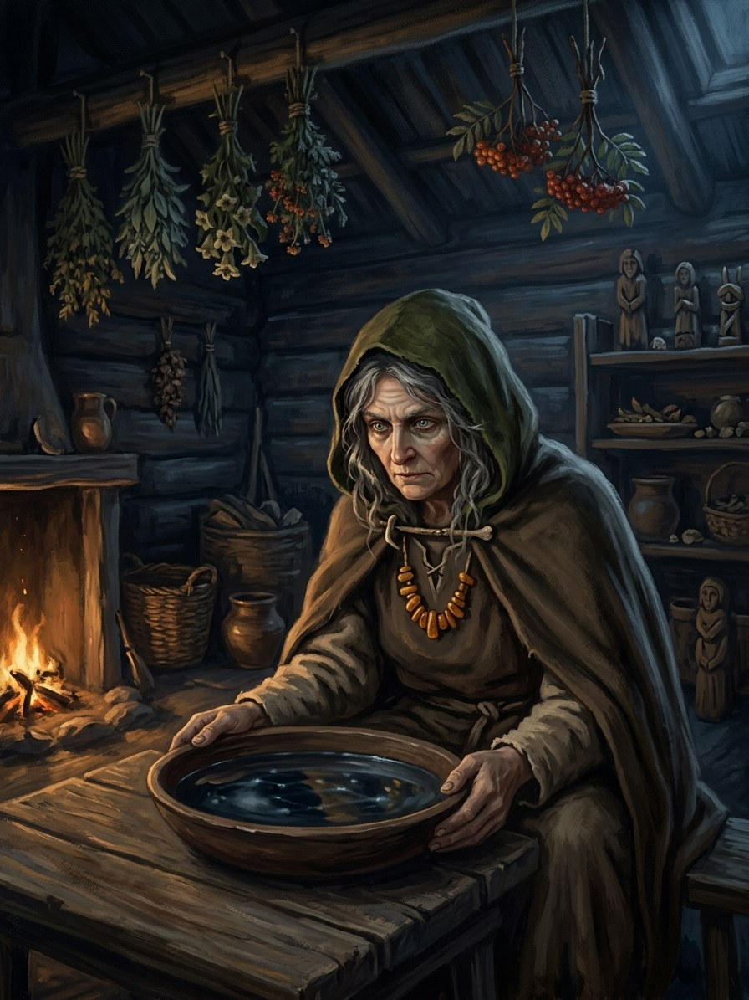

Ragana (seer-witch)¶
Folk source [Historical record]¶
The Lithuanian witch. The word is commonly linked to regėti, “to see”. Raganos gather on the Šatrija hill in Samogitia and other hills on Midsummer night; spoil cows’ milk and steal “milk-luck” with dew gathered on Rasos morning; cause illness and turn people into animals; and in tales threaten or devour children. They also heal. The figure blends a wise woman, a seer and a dangerous neighbour.
Ragana (seer-witch)

Ragana (seer-witch) · creature¶
Type |
creature |
Status |
The saga’s invention |
Note |
Bestiary §22. Danger II → III. |
In the saga (where the folk are half-wrong)¶
A woman born with Kalba (prigimtis) outside the priestly lines: no vaidilutė training, no shrine, only gift and need. The folk are right that she sees and can harm, and wrong that she serves Velnias, at least before 1387. After the Krivis and the vaidilutės are gone, Velnias’s small shapes are the only teachers left and many raganos learn from them. They pay their own costs (blindness, voicelessness, thirst) and pass them on in their prices.
Signs & habitat¶
A woman alone at the edge of the village whom everyone visits and no one invites; dew-marks dragged through the rye on Rasos morning; cows dry for no reason.
Before / after the Unbinding¶
Before: the village’s healer and occasional scapegoat. After: needed and hunted at once, the only defence against the hungry dead and the first one blamed for them.
Banes, wards, bargains, and their cost¶
Against a hostile ragana: rowan over the cowshed, iron in the churn, juniper smoke (she will know you did it). Hiring one is expensive: she works by Kalba and pays the price herself, so she charges what she asks, plus your silence, plus the risk you will need her again.
Danger level¶
II hazard → III dangerous.
Story hooks¶
Book I: the prologue’s captain calls Eglė raganos dukteri, a half-right insult to a vaidilutė. Book II ch. 9: a ragana offers to buy the boys back with an Order child’s blood and Vytautas refuses. Books II–V: a ragana and a vilkatas working together, each despising the other’s methods.
Relations
Bargained with: Velnias’s small shapes (velniukai) (1387–…) — After the Krivis and vaidilutės are gone, Velnias’s small shapes are the only teachers left.
Origin [Historical record] the witch (from regėti, to see), gathering on Šatrija hill at Midsummer, also a healer · [The saga's invention] a woman born with Kalba outside the priestly lines
Tier Tier 2 · burtininkas / ragana, asked power (prigimtis)
Danger II hazard → III dangerous
Habitat A woman alone at the edge of the village whom everyone visits and no one invites
Wants Her price, in full, plus silence. After 1387, a teacher
Takes Her own costs (blindness, voicelessness, thirst), passed on in her prices
Signs Dew-marks dragged through the rye on Rasos morning; cows dry for no reason
Banes Rowan over the cowshed, iron in the churn, juniper smoke
Half-wrong truth. The folk are right that she sees and can harm. They are wrong that she serves Velnias, at least before 1387. After it, with the Krivis and the vaidilutės gone, his small shapes are the only teachers left.
Needed and hunted. After 1387 she is the only defence against the hungry dead, and the first one blamed for them.
Hiring out Kalba. She works by Kalba and pays the price herself, so she charges heavily.
Selling curses. Curse-belts for the vilkolakis are Velnias's craft sold through raganos.
The forbidden transfer (offered). Book II ch. 9: a Lagoon ragana offers to draw the poison from the hostage boys over any distance, but her old body cannot carry it, so it must go into a young Order child. Vytautas refuses.
Hiring her. What she asks, plus your silence, plus the risk that you will need her again.
Warding against her. Small, but she will know you did it.
Connections¶
graph LR
ragana["Ragana (seer-witch)"]
velnio_pavidalai["Velnias's small shapes (velniukai)"]
ragana -->|Bargained with| velnio_pavidalai
style ragana stroke-width:3px